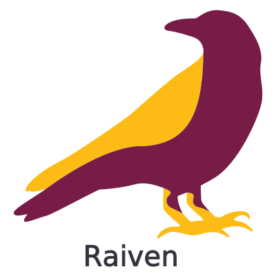

Overview

The Radiology Environment of the Future Radiology + AI + Environment = Raiven
Artificial intelligence (AI) is finding an increasing number of applications in nuclear medicine and radiology. Deep learning models have been used to improve image quality, automate image segmentation, and aid in disease classification. Models that combine learned features, radiomic features, and clinical information can be used to predict disease progression, treatment outcome and survival.
However, translation of such models/algorithms into clinical trials or standard of care applications is often nontrivial due to the lack of an appropriate framework for model deployment. The aim of this project is to develop such a framework that satisfies the following design specifications: 1. Allows easy combination of different algorithms to create pipelines with multistep workflows 2. Works with existing workstations available to physicians/researchers 3. Allows the deployment of models developed in any programming language without the need for cumbersome and time-consuming configuration 4. Is easy to deploy and use.
The RAIVEN (Radiology AI Virtual ENvironment) framework represents a vision of a new radiology environment that incorporates AI tools to better treat and diagnose disease.
Deployment
The easiest way to deploy Raiven is using docker. Raiven comes with a preconfigured compose file.
$ docker-compose up -d
Config
Configuration of Raiven can be done in multiple places. If you are using docker, configuration
can be done by modifying the .env file. Backend configuration can also be done by modifying /backend/config.py whilst
the frontend configuration can be done by modifying /frontend/nuxt.config.js. Configuration can also be done by
setting environment variables. The environment variables which can be set are found in /backend/config.py.
Proudly Sponsored by Qurit